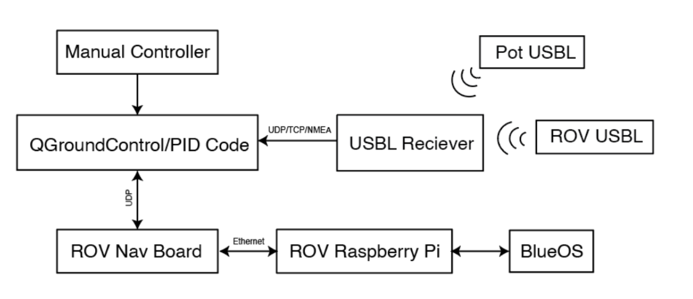
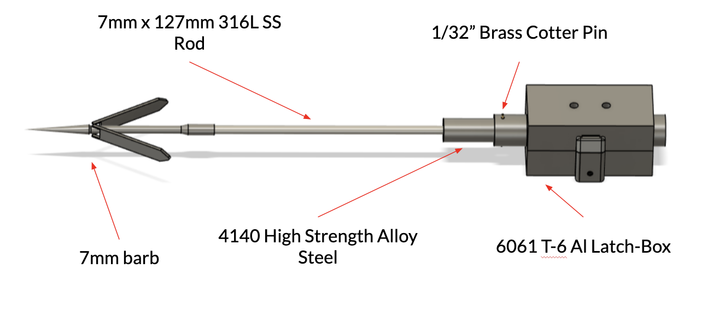
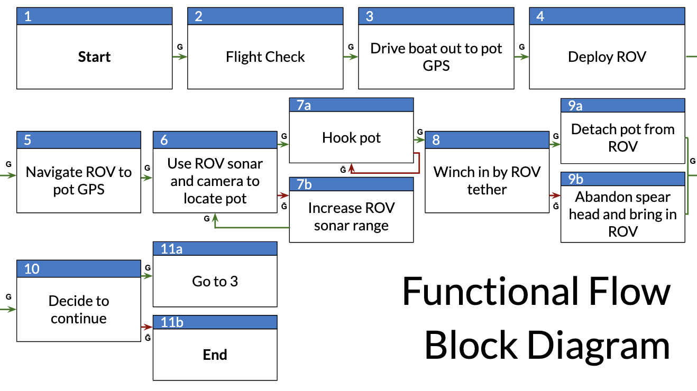

Lobster Pot Recovery System
Category: Mechanisms
Tools Used: Control Theory, Raspberry Pi, Real-time Communication Protocol
Project date: May 2025
Project Description
This project focused on designing an ROV system to autonomously retrieve lobster pots using GPS-based localization and a custom disengageable hook. Our team of nine developed a system with a BlueROV2 base platform, outfitted with acoustic and inertial navigation, a barbed retrieval mechanism, and custom software infrastructure.
I worked on the controls team with one other person. Together we developed a minimal PID control system for testing and designed a system integrating existing software to support waypoint navigation and control.
By the end of the semester, we wrote a paper and gave a 45 minute presentation to the MIT community and relevant stakeholders including other organizations that are working to recover lobster pots. Additionally, we presented a poster at the annual MIT DeFlorez Design Competition.
System Capabilities
- GPS waypoint navigation and manual control using QGroundControl + ArduPilot
- 3m accuracy USBL tracking + IMU fusion
- Short-range localization using sonar and camera
- Mechanical disengagement system for emergency detachment
Communication Architecture
Our system integrated QGroundControl, USBL tracking, and BlueOS to communicate between the surface station and the ROV. Custom PID parameters were tuned for underwater conditions.
Communication architecture including topside and onboard data flow.
Final Hook Design
The hook mechanism evolved through several prototypes to arrive at a robust shearing spearhead design. The final version used a cotter pin as a mechanical fuse to allow for emergency disengagement.
Final spearhead construction.
Mission Flow
Our autonomous operation was designed as a series of modular steps from launch to recovery. While not all steps were achieved in practice, the core infrastructure was built to support full deployment.
High-level functional flow of our ROV pot retrieval sequence.
Testing Challenges
- DVL sensor was unstable and frequently overheated in tank conditions.
- The DVL accumulated error in the pool due to the reflective floor.
- Struggle with maintaing accurate GPS data indoors during testing.
- Connection issues across software programs blocking other programs' pipelines.
- Sensor, thruster, and wiring malfunctions happening periodically.
We learned a lot from all these challenges, and in the end, we learned so much about the system and the problems that we came out knowing exactly how to suceed.
Future Work
For future development, we recommended simulation-based control tuning (e.g., SITL for BlueRobotics), streamlined navigation software to avoid using multiple programs at once, and improved tether/recovery mechanisms to minimize drift and enable deep-sea operation.
Final Reflections
While our team faced time constraints and hardware limitations that prevented a full autonomous demo, the process taught us invaluable lessons in underwater systems, sensor integration, and debugging real-world issues. We made strong progress in embedded communication pipelines, hook deployment logic, and USBL localization. Most importantly, we learned a lot about how to design and test electromechanical systems, especially the importance of environmental validation when working in unpredictable domains like ocean robotics.